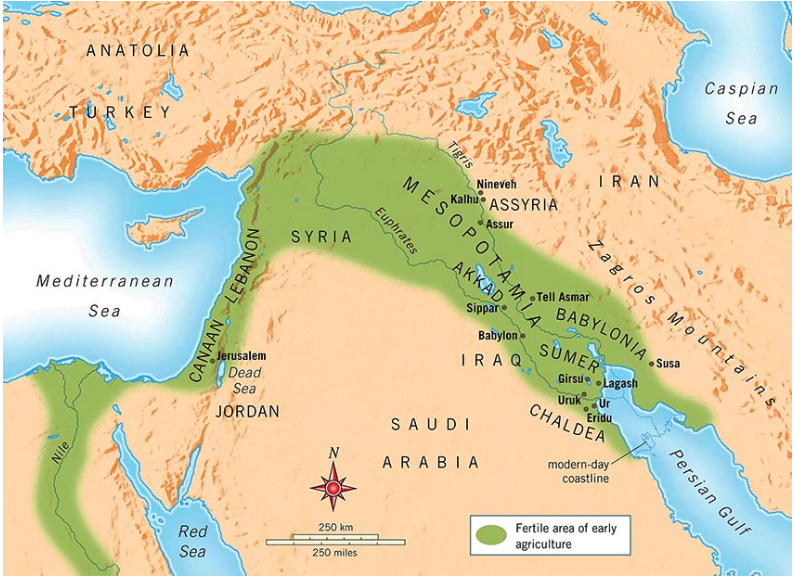
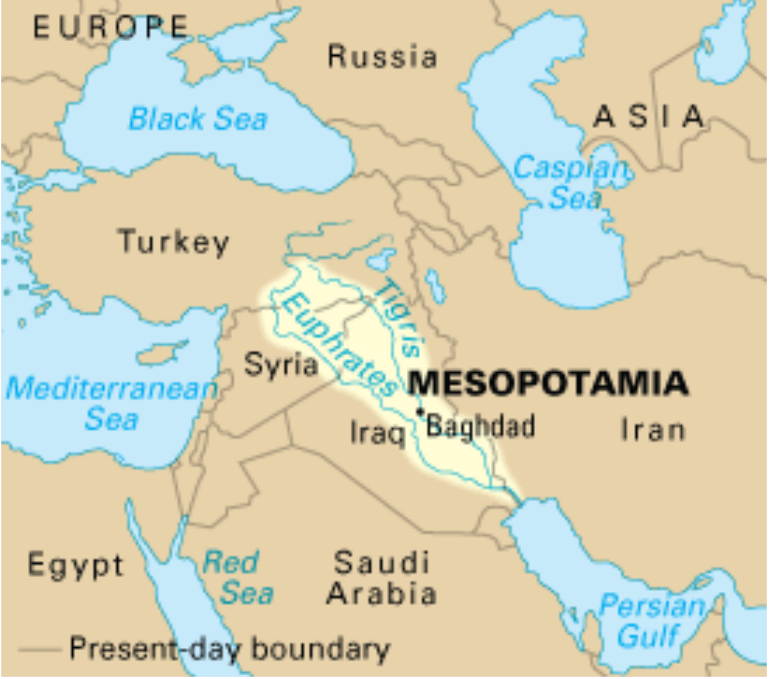
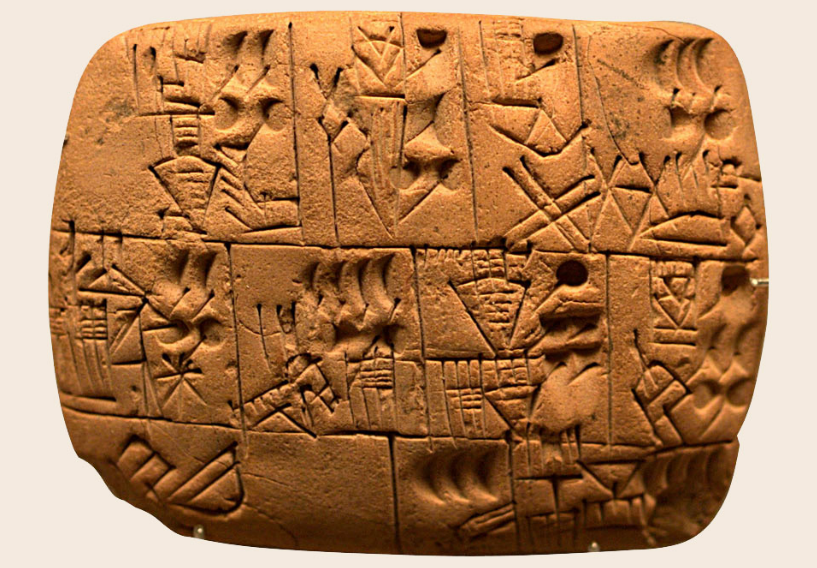
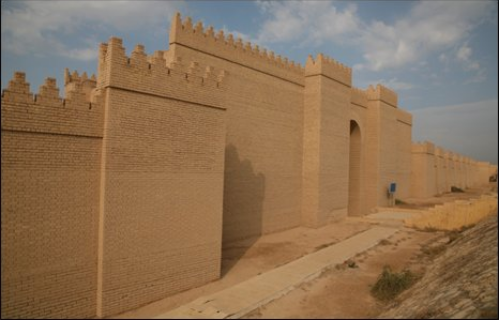
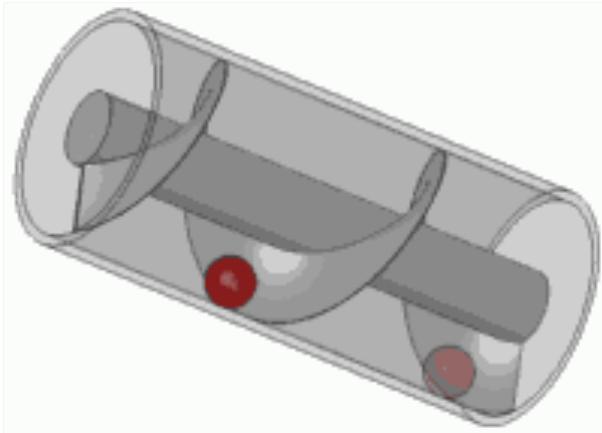
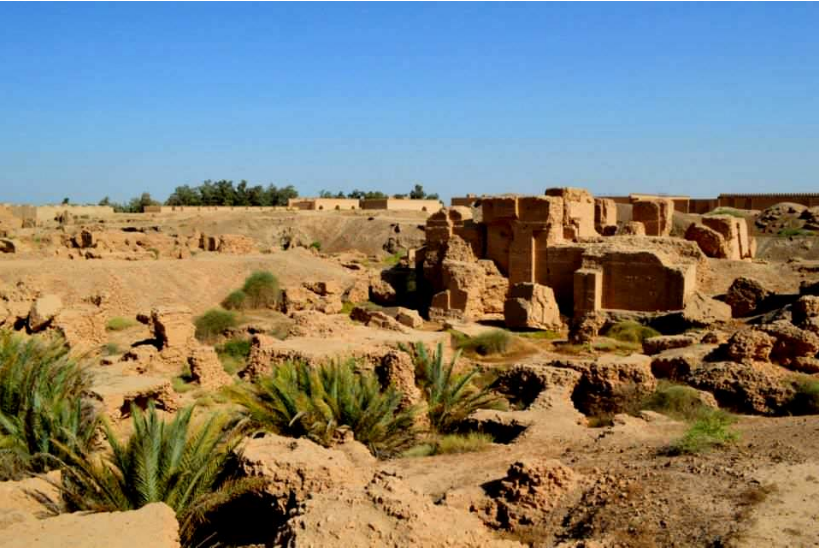
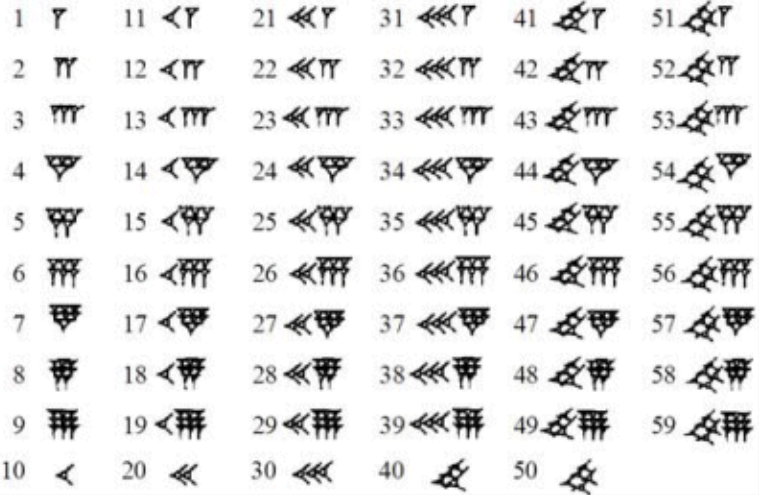
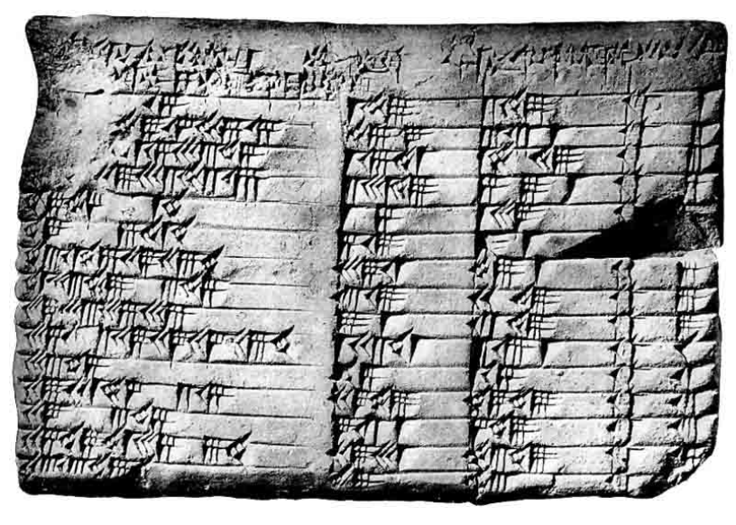
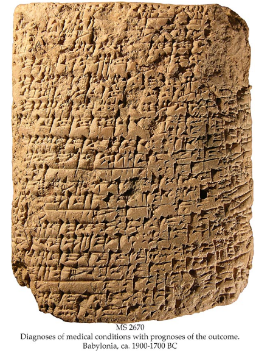

WorldCiv
Table of Contents
- 1. History 1310 - Science and Technology in World Civilization
- 2. Lecture 1 - What is the meaning of Science?
- 3. Lecture 2 - Babylon and beyond
1 History 1310 - Science and Technology in World Civilization
Date: Lecturer: Driggers
1.1 Questions? :email: edriggers@tntech.edu Office Hours:
T-Th: 4:30-6 What are office hours for?
- Problems reading and retaining information from lecture or textbook.
- Questions about grades, performance, participation, attendance, Etc
- Go over a test or paper
- Recommendations about improvement
2 Lecture 1 - What is the meaning of Science?
- Whare is the use of science?
- Are there ways that science can be improperly?
- Is science value free?
- How do non-epistimic
values figure into scientific investigations?
- What are the role of
- contextual values in science?
- Whose values will impact scientific work?
2.1 What do I mean by Values???
- Epistimic-Traditionally means values in the internal processes of science? like measuremenquantification, ?Testable?
- Non-Epistimic-Means those not in the internal process, often effecting the conceptualization of questions and interpretation of ?data,? things like experiences, psychological worries, political values, ideas about race, gender &c.
- Objectivity is a changing standard throughout history!
2.2 Traditional Conception of Scientific Investigation
- Scientists:
- Observe phenomena, Measure it, and Understand and make products; control phenomena; offer recommendations
- Who are scientists?
- What is deemed phenomena?
- What counts as proper measurement?
- Why are conclusions drawn, verified, and communicated to prfessionals and the public(s)?
- Is science objective?
- What questions are we as society comfortable with asking?
- What is the role of ethics in scientific investigations?
2.2.1 Nazi Medical Experimentation and the body
- Examples include, but not limited to:
- High Altitude experiments
- Drug experiments
- Freezing water
2.2.2 Drug Testing and Children
- Case of anti-depressants and adolescents
- Re-branding of drugs for profit * Arthritis ##
2.2.3 Conception and understanding of life
- The "Sperm and Egg" Model Traditionally the woman's reproductive system was considered pretty passive, no we know that isn't the case. The woman's body is responsible for "weeding out" the weak of the Man's sperm
2.2.4 Interventions in the environment
+Iron sulfave (Fertilizer) dumping into ocean
3 Lecture 2 - Babylon and beyond
:Lecturer: Driggers :DATE:
3.1 Orientation:
- Survey of history if science, technology, medicine, etc. throughout greater Mesopotamian history
- General Details, geography, Etc.
3.2 TODO Theroretical Point: Verify quots…
- where SHOULD we start this class?
Most projessors start much later, with the greeks; look at history through their eyes - The power of narrative
- Keep Reading!
- Problem with Near Eastern Studies - Far East Studies??? To have a proper Near east study you have to be near east, most aren't.
3.3 Geographic location:

Figure 1: Fertile Crescent of early agriculture
- Framed in Today's Geopolitical Landscape

Figure 2: More modern representation of area.
3.4 Home to diverse groups of people
- Sumerians
- Akkadians
- Persians
- Babylonians
- Some of the oldest societies
3.5 Hummurabi and his Code
- If any one finds runaway male or female slaves in the open country and bring them to their masters, the master of the slaves shall pay him two shekels of silver.
- If any one is commiting a robbery and is caught, then he shall be put to death.
- If a tevern-keeper (feminine) does not accept corn according to gross weight in payment of a drink, but takes money, and the price of the drink is less than that of the corn, she shall be convicted and thrown into the water.
- If a son strike his father, his hands be hewn off.
- If a man knock out the teeth if his equal, his teeth shall be knocked out.
- If a barber, without the knowldedge of his master, but the sign of a slave on a slave not to be sold, the hands of the barber shall be cut off.
- If a slave says to his master: "You are not my master" - if they convict him his master shall cut off his ear.
3.6 Timeline
- Goes back to 3500 BC
- Civilization arose around present day Iraq
- Communicated throught a written language: cuneiform

Figure 3: Cuneiform tablet writing
3.7 Literature: The Epic of Gilgamesh
- Written around 2100 BC
- About 12 books, or about 5 epic poems
He saw the Scret, discovered the HIdden, he brought information of (the time) before the Flood. He went on a distance hourney, pushing himeelsf to exhaustion, but then was brought peace(1.5-8)
3.8 Technological Achievement
- Metalworking (Bronze, Copper, Gold, and eventually iron)
- Glass making
- Textile Weaving
- Water Storage/control
3.8.1 Walls of Babylon Part of Seven Wonder

Figure 4: Wall of Babylon
Provides great security, allows for focus on other aspects of life.
3.8.2 TODO Archimedes Screw: Verify location of possible garden's location with Driggers.
Some scholars believe that this was how the supposed handing gardens were irrigated.

Figure 5: Archimedes Screw
Figure 6: Hanging Gardens

Figure 7: Possible location of gardens
3.8.3 Assyrian Pottery
Allows travel to further distances away from immediate water access.
3.8.4 Astronomy - Wrote down observations
This allows us to track backwards in time and line up our time line, and understandings with theirs.
3.8.5 Mathematics
Mostly derived from needs of scribes, and clerks, doing tax calculations, record keeping was also important.

Figure 8: Cuneiform Mathematics symbols.

Figure 9: Accounting Records
3.8.6 Medicine

Figure 10: Medical Records
Scholars of early medicine started taking notes about what methods worked, and those that didn't